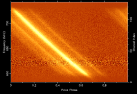

In pulsar astronomy a handy quantity is the dispersion measure (DM) of a pulsar, which manifests itself observationally as a broadening of an otherwise sharp pulse when a pulsar is observed over a finite bandwidth. Technically the DM is the “integrated column density of free electrons between an observer and a pulsar”. It is perhaps easier to think about dispersion measure representing the number of free electrons between us and the pulsar per unit area. So if we could construct a long tube of cross-sectional area 1 square cm and extending from us to the pulsar, the DM would be proportional to the number of free electrons inside this volume.
Origin of Dispersion Measure
Since radio waves are a very low frequency form of light/electromagnetic radiation (ie photons), they are nothing more than an oscillating electric and magnetic field. In the presence of charged particles such as protons and electrons, the electrostatic interaction between the light and the charged particles causes a delay in the propagation of the light, with the delay being a function of radio frequency and the masses of the charged particles. More energetic photons tend to push past the free electrons with little effect on their speed, whereas lower frequency photons are more significantly delayed. Similarly electrons react to the passing light more than protons due to their much lower masses and this causes greater delays in the light propogation time. The delay is inversely proportional to the mass of the charged particles. Hence the amount of dispersion is dominated by the electrons which are almost 2000 times lighter than protons and astronomers often just talk about the free electron content being responsible for the dispersion.
The net result is that when astronomers observe radio pulsars, the pulse is delayed, and the amount of the delay depends upon the radio frequency and the DM – see the above Figure.
The amount of dispersion measure smearing τDM across a finite bandwidth B MHz at a centre frequency of ν GHz is proportional to the DM and given by:
τDM = 8.3 B DM ν-3 μs
The time delay t2 – t1 between two observing frequencies ν1 and ν2 is:
t2 – t1 = 4.15 ms DM [( ν1 /GHz)-2 – ( ν2 /GHz)-2]
To compute the Dispersion Measure by measuring the time delay between two frequency bands use:
DM = ( t2 – t1 )/(4.15 ms) [( ν1 /GHz)-2 – ( ν2 /GHz)-2]-1
The uncertainty in this DM is then:
σDM = ( σt22 + σt12 )1/2 /(4.15 ms) [( ν1 /GHz)-2 – ( ν2 /GHz)-2]-1
and the uncertainty in an arrival time due to DM errors ( σtDM3 ) at an observing frequency v3 based upon two other arrival times t2 and t1 to determine the DM is:
σtDM3 = [(σt22 + σt12 )1/2 / ( v3 /GHz)2 ] [(ν1 /GHz)-2 – ( ν2 /GHz)-2]-1
this should be added in quadrature to the uncertainty in the arrival time to obtain the true error.
Dispersion measures can be used in conjunction with a model of the Galaxy’s free electron density as a distance indicator. Dispersion measure is often quoted in the rather peculiar units of pc cm-3. This makes it easy to determine the distance to a given pulsar. By knowing the mean electron density ne in electrons cm-3, the distance (D) to the pulsar can be computed from the dispersion measure DM.
DM= ne D
Example
The binary pulsar PSR J0437-4715 has had its parallax distance determined from pulsar timing to be 156 pc. The dispersion of 2.643 pc cm-3 means that the mean electron density between the Earth and the pulsar is:
ne = DM/D = 2.643/156 = 0.017 electrons/cm3